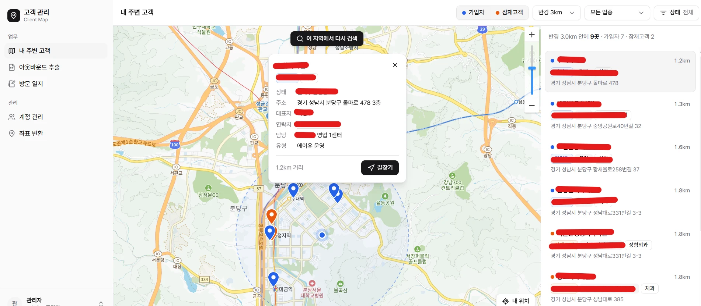

영업 효율화 및 전략 데이터 추출 시스템
영업 담당자가 지금 있는 곳 주변의 고객사를 지도에서 찾고, 상태와 방문 히스토리를 바로 확인하는 사내 고객 관리 서비스입니다.
배경
영업 담당자는 신규·기존 고객사를 방문한 김에 근처의 기존 고객사도 관리차 들르고 싶어 했습니다. 하지만 고객사를 각자 네이버 지도에 직접 등록해 두고 위치를 확인하고 있었습니다.
영업 전략 회의에서 나온 아이디어도 빠르게 확인해 볼 방법이 필요했습니다. 기존 데이터를 새로운 형태로 가공한 마케팅 데이터가 필요했지만, 고객사 반응도 확인되지 않은 상태에서 개발 부서에 요청하기에는 시간이 오래 걸렸습니다.
내가 한 일
기획부터 개발, 배포, 운영까지 혼자 수행
- 기획영업 담당자의 요구를 듣고 화면과 데이터 구조 설계
- 데이터고객사 주소를 좌표로 변환하고, 기존 데이터를 마케팅 데이터로 가공·추출해 부서 안에서 POC처럼 먼저 검증
성과
수동 등록 → 자동 조회
- 개인별 네이버 지도 관리를 전사 공용 고객 지도로 전환
- 외근 중에도 고객사 정보, 담당자, 히스토리를 바로 확인
회의 아이디어 → 현장 검증
- 영업 전략 회의에서 나온 아이디어대로 사내 시스템의 기초 데이터를 가공해 바로 추출
- 정식 전략으로 채택하기 전에 현장에서 빠르게 테스트하고 검증
